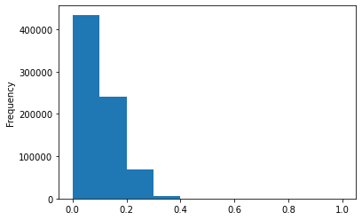
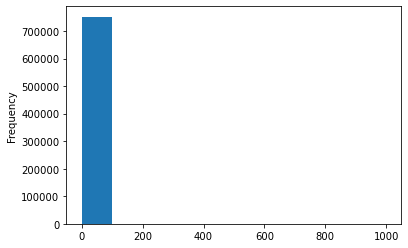

Imports and Parameter Settings¶
[1]:
import sys
import pyarrow as pa
import pyarrow.parquet as pq
import pyarrow.compute as pc
import pandas as pd
import numpy as np
from rdkit import DataStructs
#sys.path.append('/home/djs10/gitlab/msdc_services/libraries')
from masskit.spectrum import spectrum
# Parameters
MIN_INTENSITY_PERCENT=0.05
USE_MZ_ZERO=True
FILENAME = '/data/aiomics/search/libraries/hr_msms_nist2020_v42_0.parquet'
OUTFILENAME = '/data/aiomics/search/libraries/hr_msms_nist2020_v42_0_fingerprints.parquet'
#FILENAME = '/data/aiomics/search/libraries/small.parquet'
#OUTFILENAME = '/data/aiomics/search/libraries/small_fingerprints.parquet'
Load Data¶
[2]:
%%time
# ion_mode = p
# set
only_cols = ["id", "mz", "intensity", "set"]
filter_list = [ ('ion_mode','=','P') ]
table = pq.read_table(FILENAME, columns=only_cols, filters=filter_list).combine_chunks()
pd.set_option("display.max_columns", 70)
table.to_pandas()
CPU times: user 1.85 s, sys: 941 ms, total: 2.79 s
Wall time: 4.4 s
[2]:
| id | mz | intensity | set | |
|---|---|---|---|---|
| 0 | 1035166 | [45.96, 597.48, 598.5, 599.5, 600.52, 951.77, ... | [46.35, 51.85, 41.36, 669.33, 40.76, 51.85, 40... | dev |
| 1 | 1035167 | [597.5, 599.5, 1449.98, 1450.98, 1465.98, 1466... | [50.95, 683.32, 999.0, 43.56, 46.35, 50.65, 56... | train |
| 2 | 1035168 | [537.39, 599.5, 600.51, 1449.98, 1467.0] | [55.94, 999.0, 42.26, 853.85, 139.16] | train |
| 3 | 1035169 | [597.46, 598.5, 599.51, 600.49, 1448.92, 1449.... | [41.86, 45.15, 999.0, 43.86, 41.86, 452.85, 18... | train |
| 4 | 1035170 | [598.49, 599.5, 600.5, 1449.97] | [47.85, 999.0, 85.51, 336.46] | train |
| ... | ... | ... | ... | ... |
| 751903 | 3485111 | [150.0546, 151.0386, 152.0703, 154.0496, 156.0... | [34.07, 49.75, 2.9, 4.1, 3.3, 8.79, 19.28, 25.... | train |
| 751904 | 3485112 | [150.0545, 151.0385, 154.0496, 166.0495, 167.0... | [60.94, 82.12, 10.39, 10.79, 18.18, 35.96, 28.... | train |
| 751905 | 3485113 | [150.0547, 151.0386, 168.0653, 178.0494, 197.0... | [148.45, 134.47, 18.78, 35.96, 35.26, 40.56, 9... | train |
| 751906 | 3485114 | [150.0547, 151.0387, 264.2682, 265.2721] | [316.88, 334.07, 999.0, 92.71] | train |
| 751907 | 3485115 | [186.0757, 197.0439, 204.0863, 205.09, 214.071... | [18.08, 5.39, 96.1, 5.99, 3.0, 6.59, 4.2, 14.1... | train |
751908 rows × 4 columns
[6]:
table.column_names
[6]:
['id',
'charge',
'ev',
'instrument',
'instrument_type',
'ion_mode',
'ionization',
'name',
'nce',
'intensity',
'product_massinfo',
'mz',
'precursor_intensity',
'precursor_massinfo',
'precursor_mz',
'spectrum_fp',
'spectrum_fp_count',
'aromatic_rings',
'collision_energy',
'collision_gas',
'column',
'ecfp4',
'ecfp4_count',
'estimated_ri',
'estimated_ri_error',
'exact_mass',
'exact_mw',
'experimental_ri',
'experimental_ri_data',
'experimental_ri_error',
'formula',
'has_2d',
'has_conformer',
'has_tms',
'hba',
'hbd',
'inchi_key',
'inchi_key_orig',
'insource_voltage',
'isomeric_smiles',
'mol',
'num_atoms',
'num_undef_double',
'num_undef_stereo',
'rotatable_bonds',
'sample_inlet',
'set',
'smiles',
'stdnp',
'stdnp_data',
'stdnp_error',
'stdpolar',
'stdpolar_data',
'stdpolar_error',
'synonyms',
'tpsa',
'vial_id']
[7]:
%%time
only_cols = ["id", "charge", "mz", "intensity", "exact_mass"]
table = pq.read_table(FILENAME, columns=only_cols)
table.to_pandas()
CPU times: user 1.51 s, sys: 744 ms, total: 2.26 s
Wall time: 1.81 s
[7]:
| id | charge | mz | intensity | exact_mass | |
|---|---|---|---|---|---|
| 0 | 1035166 | 1 | [45.96, 597.48, 598.5, 599.5, 600.52, 951.77, ... | [46.35, 51.85, 41.36, 669.33, 40.76, 51.85, 40... | 1448.97223 |
| 1 | 1035167 | 1 | [597.5, 599.5, 1449.98, 1450.98, 1465.98, 1466... | [50.95, 683.32, 999.0, 43.56, 46.35, 50.65, 56... | 1448.97223 |
| 2 | 1035168 | 1 | [537.39, 599.5, 600.51, 1449.98, 1467.0] | [55.94, 999.0, 42.26, 853.85, 139.16] | 1448.97223 |
| 3 | 1035169 | 1 | [597.46, 598.5, 599.51, 600.49, 1448.92, 1449.... | [41.86, 45.15, 999.0, 43.86, 41.86, 452.85, 18... | 1448.97223 |
| 4 | 1035170 | 1 | [598.49, 599.5, 600.5, 1449.97] | [47.85, 999.0, 85.51, 336.46] | 1448.97223 |
| ... | ... | ... | ... | ... | ... |
| 1007661 | 3485111 | 2 | [150.0546, 151.0386, 152.0703, 154.0496, 156.0... | [34.07, 49.75, 2.9, 4.1, 3.3, 8.79, 19.28, 25.... | 1383.82383 |
| 1007662 | 3485112 | 2 | [150.0545, 151.0385, 154.0496, 166.0495, 167.0... | [60.94, 82.12, 10.39, 10.79, 18.18, 35.96, 28.... | 1383.82383 |
| 1007663 | 3485113 | 2 | [150.0547, 151.0386, 168.0653, 178.0494, 197.0... | [148.45, 134.47, 18.78, 35.96, 35.26, 40.56, 9... | 1383.82383 |
| 1007664 | 3485114 | 2 | [150.0547, 151.0387, 264.2682, 265.2721] | [316.88, 334.07, 999.0, 92.71] | 1383.82383 |
| 1007665 | 3485115 | 2 | [186.0757, 197.0439, 204.0863, 205.09, 214.071... | [18.08, 5.39, 96.1, 5.99, 3.0, 6.59, 4.2, 14.1... | 1383.82383 |
1007666 rows × 5 columns
[35]:
df = table[0:100000:10000].to_pandas()
df
[35]:
| id | charge | mz | intensity | exact_mass | |
|---|---|---|---|---|---|
| 0 | 1035166 | 1 | [45.96, 597.48, 598.5, 599.5, 600.52, 951.77, ... | [46.35, 51.85, 41.36, 669.33, 40.76, 51.85, 40... | 1448.972230 |
| 1 | 1064281 | 2 | [30.03, 44.05, 44.98, 45.06, 45.98, 47.99, 57.... | [12.89, 18.98, 370.03, 92.31, 11.09, 63.64, 36... | 152.044190 |
| 2 | 1074623 | 1 | [81.03, 112.05, 308.06] | [27.37, 999.0, 161.84] | 307.056936 |
| 3 | 1097402 | 1 | [57.04, 57.07, 58.96, 85.04, 99.99, 118.07, 12... | [20.38, 42.16, 82.22, 18.08, 52.45, 40.76, 30.... | 261.111341 |
| 4 | 1114460 | 1 | [44.05, 59.048, 60.056, 70.065, 73.064, 86.071... | [49.15, 55.54, 12.59, 95.8, 25.17, 52.65, 977.... | 233.112404 |
| 5 | 1140635 | 1 | [50.015, 51.0228, 53.0385, 55.0178, 55.0542, 6... | [28.17, 44.06, 11.69, 11.89, 9.59, 2.7, 17.08,... | 386.209324 |
| 6 | 1156152 | 1 | [55.018, 65.0387, 68.9971, 77.0384, 78.0464, 7... | [10.39, 35.86, 3.2, 70.13, 29.57, 8.29, 521.98... | 358.120508 |
| 7 | 1172453 | -2 | [62.9642, 77.9752, 78.9591, 92.0254, 96.9696, ... | [1.0, 3.9, 999.0, 13.29, 71.33, 55.94, 1.8, 1.... | 893.219673 |
| 8 | 1188155 | 1 | [65.0386, 91.0543] | [502.1, 999.0] | 135.104799 |
| 9 | 1203633 | -1 | [55.453, 57.0347, 59.014, 65.0397, 67.0553, 68... | [1.5, 7.59, 29.47, 1.6, 1.7, 1.1, 4.9, 5.79, 1... | 374.209324 |
[26]:
df.transpose()
[26]:
| 0 | 1 | 2 | 3 | 4 | 5 | 6 | 7 | 8 | 9 | |
|---|---|---|---|---|---|---|---|---|---|---|
| id | 1035166 | 1064281 | 1074623 | 1097402 | 1114460 | 1140635 | 1156152 | 1172453 | 1188155 | 1203633 |
| charge | 1 | 2 | 1 | 1 | 1 | 1 | 1 | -2 | 1 | -1 |
| mz | [45.96, 597.48, 598.5, 599.5, 600.52, 951.77, ... | [30.03, 44.05, 44.98, 45.06, 45.98, 47.99, 57.... | [81.03, 112.05, 308.06] | [57.04, 57.07, 58.96, 85.04, 99.99, 118.07, 12... | [44.05, 59.048, 60.056, 70.065, 73.064, 86.071... | [50.015, 51.0228, 53.0385, 55.0178, 55.0542, 6... | [55.018, 65.0387, 68.9971, 77.0384, 78.0464, 7... | [62.9642, 77.9752, 78.9591, 92.0254, 96.9696, ... | [65.0386, 91.0543] | [55.453, 57.0347, 59.014, 65.0397, 67.0553, 68... |
| intensity | [46.35, 51.85, 41.36, 669.33, 40.76, 51.85, 40... | [12.89, 18.98, 370.03, 92.31, 11.09, 63.64, 36... | [27.37, 999.0, 161.84] | [20.38, 42.16, 82.22, 18.08, 52.45, 40.76, 30.... | [49.15, 55.54, 12.59, 95.8, 25.17, 52.65, 977.... | [28.17, 44.06, 11.69, 11.89, 9.59, 2.7, 17.08,... | [10.39, 35.86, 3.2, 70.13, 29.57, 8.29, 521.98... | [1.0, 3.9, 999.0, 13.29, 71.33, 55.94, 1.8, 1.... | [502.1, 999.0] | [1.5, 7.59, 29.47, 1.6, 1.7, 1.1, 4.9, 5.79, 1... |
| exact_mass | 1448.97223 | 152.04419 | 307.056936 | 261.111341 | 233.112404 | 386.209324 | 358.120508 | 893.219673 | 135.104799 | 374.209324 |
Using NumPy Array¶
Defunct method of transforming an RDKit bitvec into a format suitable for storing in a pyarrow array. While the resulting filesize was smaller, everything else took longer and used more memory.
[14]:
# filename = OUTFILENAME+"_numpy"
# fingerprint_schema = pa.schema(
# [
# pa.field("id", pa.int64()),
# pa.field("fingerprint_rep", pa.list_(pa.int8()))
# ]
# )
#
# def bitvecToArrow(fp):
# fp_numpy = np.zeros((0,), dtype=int)
# DataStructs.ConvertToNumpyArray(fp, fp_numpy)
# return fp_numpy
#
# def arrowToBitvec(fp):
# bitstring="".join(fp.astype(str))
# return DataStructs.cDataStructs.CreateFromBitString(bitstring)
Calc fingerprints and store¶
[14]:
%%time
fingerprint_schema = pa.schema(
[
pa.field("id", pa.int64()),
pa.field("fingerprint_rep", pa.binary()),
pa.field("set", pa.dictionary(pa.int8(), pa.string()))
]
)
def bitvecToArrow(fp):
return DataStructs.cDataStructs.BitVectToBinaryText(fp)
def arrowToBitvec(fp):
return DataStructs.cDataStructs.CreateFromBinaryText(fp)
def fetch_mz(idx):
x = pc.list_flatten(table.column("mz").slice(idx,1)).to_pandas()
y = pc.list_flatten(table.column("intensity").slice(idx,1)).to_pandas()
df = pd.DataFrame({"mz": x, "intensity": y})
# Filter by minimum intensity
df = df[df['intensity'] > df['intensity'].max()*MIN_INTENSITY_PERCENT]
return df['mz'].to_numpy()
def fetch_spectrum(idx):
x = pc.list_flatten(table.column("mz").slice(idx,1)).to_numpy()
y = pc.list_flatten(table.column("intensity").slice(idx,1)).to_numpy()
return spectrum.init_spectrum(True, mz=x, intensity=y)
def calc_fingerprint(mz):
def calc_bit(a, b):
return int(abs(b-a)*10)
fp = DataStructs.ExplicitBitVect(20000)
len_mz = len(mz)
if USE_MZ_ZERO:
for i in range(len_mz):
#print(0, mz[i], calc_bit(0,mz[i]))
fp.SetBit(calc_bit(0,mz[i]))
for i in range(len_mz):
for j in range(i+1,len_mz):
#print(mz[i], mz[j], calc_bit(mz[i],mz[j]))
fp.SetBit(calc_bit(mz[i],mz[j]))
return fp
ids = []
fingerprints = []
tables = []
for i in range(len(table)):
ids.append(table.column("id").slice(i,1).to_pandas()[0])
mz = fetch_mz(i)
fp = bitvecToArrow(calc_fingerprint(mz))
fingerprints.append(fp)
if (len(ids) >= 25000):
tables.append(pa.table({"id": ids, "fingerprint_rep": fingerprints}, schema=fingerprint_schema))
ids = []
fingerprints = []
#print(sys.getsizeof(fp))
#print(DataStructs.cDataStructs.BitVectToText(fp))
if (len(ids) > 0):
tables.append(pa.table({"id": ids, "fingerprint_rep": fingerprints}, schema=fingerprint_schema))
ids = []
fingerprints = []
fp_table = pa.concat_tables(tables)
#fp_table = pa.table(
# {
# "id": table.column("id"),
# "fingerprint": fingerprints
# }, schema=fingerprint_schema)
#fp_table.to_pandas()
pq.write_table(fp_table, OUTFILENAME, row_group_size=250000, version="2.0")
fp_table.nbytes
CPU times: user 9min 3s, sys: 834 ms, total: 9min 4s
Wall time: 9min 5s
[14]:
1888793020
Read fingerprints from the store and convert¶
[57]:
%%time
fp_table2 = pq.read_table(OUTFILENAME)
fp_df = fp_table2.to_pandas()
fp_df = fp_df.assign(fingerprint=fp_df['fingerprint_rep'].apply(arrowToBitvec))
fp_df = fp[['id', 'fingerprint']]
---------------------------------------------------------------------------
TypeError Traceback (most recent call last)
<timed exec> in <module>
TypeError: byte indices must be integers or slices, not list
Tanimoto vs. Cosine¶
[58]:
query_idx = 5400
query_fp = fp_df['fingerprint'][query_idx]
query_spec = fetch_spectrum(query_idx)
query_spec
[58]:
[59]:
%%time
df = fp_df.assign(tanimoto=DataStructs.cDataStructs.BulkTanimotoSimilarity(query_fp, fp_df['fingerprint']))
CPU times: user 1.11 s, sys: 15.9 ms, total: 1.13 s
Wall time: 1.13 s
[60]:
%%time
cosine_score = []
for i in range(len(table)):
spec = fetch_spectrum(i)
cosine_score.append(query_spec.cosine_score(spec))
df = df.assign(cosine=cosine_score)
CPU times: user 2min 9s, sys: 25.1 ms, total: 2min 9s
Wall time: 2min 9s
[61]:
df[['id','tanimoto', 'cosine']]
[61]:
| id | tanimoto | cosine | |
|---|---|---|---|
| 0 | 1035166 | 0.064935 | 0.0 |
| 1 | 1035167 | 0.102041 | 0.0 |
| 2 | 1035168 | 0.023810 | 0.0 |
| 3 | 1035169 | 0.025000 | 0.0 |
| 4 | 1035170 | 0.026316 | 0.0 |
| ... | ... | ... | ... |
| 751903 | 3485111 | 0.026316 | 0.0 |
| 751904 | 3485112 | 0.024390 | 0.0 |
| 751905 | 3485113 | 0.024390 | 0.0 |
| 751906 | 3485114 | 0.024390 | 0.0 |
| 751907 | 3485115 | 0.032520 | 0.0 |
751908 rows × 3 columns
[62]:
df[['tanimoto', 'cosine']].corr(method='pearson')
[62]:
| tanimoto | cosine | |
|---|---|---|
| tanimoto | 1.000000 | 0.039608 |
| cosine | 0.039608 | 1.000000 |
[63]:
df['tanimoto'].plot.hist()
[63]:
<AxesSubplot:ylabel='Frequency'>

[66]:
df['cosine'].plot.hist()
[66]:
<AxesSubplot:ylabel='Frequency'>

[64]:
df[df.tanimoto>0.3].describe()
[64]:
| id | tanimoto | cosine | |
|---|---|---|---|
| count | 7.188000e+03 | 7188.000000 | 7188.000000 |
| mean | 2.220454e+06 | 0.335725 | 1.864883 |
| std | 8.800404e+05 | 0.036164 | 33.964300 |
| min | 1.054586e+06 | 0.301075 | 0.000000 |
| 25% | 1.448317e+06 | 0.312500 | 0.000000 |
| 50% | 1.887226e+06 | 0.326531 | 0.000000 |
| 75% | 3.238719e+06 | 0.348485 | 0.000000 |
| max | 3.479769e+06 | 1.000000 | 999.000000 |
[65]:
df[df.cosine>100].describe()
[65]:
| id | tanimoto | cosine | |
|---|---|---|---|
| count | 1.690000e+02 | 169.000000 | 169.000000 |
| mean | 1.057890e+06 | 0.205028 | 253.419188 |
| std | 2.665267e+03 | 0.143237 | 180.131876 |
| min | 1.054550e+06 | 0.026316 | 100.499669 |
| 25% | 1.055670e+06 | 0.114286 | 137.707436 |
| 50% | 1.056816e+06 | 0.181818 | 193.571781 |
| 75% | 1.059599e+06 | 0.244898 | 291.013025 |
| max | 1.068841e+06 | 1.000000 | 999.000000 |
Search and Score¶
[77]:
%%time
merged_df = pd.merge(fp_df, table.to_pandas(), how='inner', on='id')
query_df = merged_df[merged_df.set=='test'][['id', 'fingerprint', 'mz', 'intensity']]
db_df = merged_df[merged_df.set.isin(['test','train'])][['id', 'fingerprint', 'mz', 'intensity']]
db_df
CPU times: user 478 ms, sys: 25.1 ms, total: 503 ms
Wall time: 497 ms
[77]:
| id | fingerprint | mz | intensity | |
|---|---|---|---|---|
| 1 | 1035167 | [1, 0, 0, 0, 0, 0, 0, 0, 0, 1, 1, 0, 0, 0, 0, ... | [597.5, 599.5, 1449.98, 1450.98, 1465.98, 1466... | [50.95, 683.32, 999.0, 43.56, 46.35, 50.65, 56... |
| 2 | 1035168 | [0, 0, 0, 0, 0, 0, 0, 0, 0, 0, 0, 0, 0, 0, 0, ... | [537.39, 599.5, 600.51, 1449.98, 1467.0] | [55.94, 999.0, 42.26, 853.85, 139.16] |
| 3 | 1035169 | [1, 0, 0, 0, 0, 0, 0, 0, 0, 1, 1, 0, 0, 0, 0, ... | [597.46, 598.5, 599.51, 600.49, 1448.92, 1449.... | [41.86, 45.15, 999.0, 43.86, 41.86, 452.85, 18... |
| 4 | 1035170 | [0, 0, 0, 0, 0, 0, 0, 0, 0, 0, 1, 0, 0, 0, 0, ... | [598.49, 599.5, 600.5, 1449.97] | [47.85, 999.0, 85.51, 336.46] |
| 5 | 1035171 | [0, 0, 0, 0, 0, 0, 0, 0, 0, 0, 0, 0, 0, 0, 0, ... | [597.48, 599.5, 600.51, 1449.98] | [40.56, 999.0, 40.06, 151.55] |
| ... | ... | ... | ... | ... |
| 751903 | 3485111 | [0, 0, 0, 0, 0, 0, 0, 0, 0, 0, 1, 0, 0, 0, 0, ... | [150.0546, 151.0386, 152.0703, 154.0496, 156.0... | [34.07, 49.75, 2.9, 4.1, 3.3, 8.79, 19.28, 25.... |
| 751904 | 3485112 | [0, 0, 0, 0, 0, 0, 0, 0, 0, 1, 1, 0, 0, 0, 0, ... | [150.0545, 151.0385, 154.0496, 166.0495, 167.0... | [60.94, 82.12, 10.39, 10.79, 18.18, 35.96, 28.... |
| 751905 | 3485113 | [0, 0, 0, 0, 0, 0, 0, 0, 0, 1, 1, 0, 0, 0, 0, ... | [150.0547, 151.0386, 168.0653, 178.0494, 197.0... | [148.45, 134.47, 18.78, 35.96, 35.26, 40.56, 9... |
| 751906 | 3485114 | [0, 0, 0, 0, 0, 0, 0, 0, 0, 1, 1, 0, 0, 0, 0, ... | [150.0547, 151.0387, 264.2682, 265.2721] | [316.88, 334.07, 999.0, 92.71] |
| 751907 | 3485115 | [0, 0, 0, 0, 0, 0, 0, 0, 0, 0, 1, 0, 0, 0, 0, ... | [186.0757, 197.0439, 204.0863, 205.09, 214.071... | [18.08, 5.39, 96.1, 5.99, 3.0, 6.59, 4.2, 14.1... |
736795 rows × 4 columns
[68]:
fp_df
[68]:
| id | fingerprint_rep | fingerprint | |
|---|---|---|---|
| 0 | 1035166 | b'\x01\x06\x18\x00\x00\x00\x00\x00\x00\x00\x00... | [1, 0, 0, 0, 0, 0, 0, 0, 0, 1, 1, 0, 0, 0, 0, ... |
| 1 | 1035167 | b'\x01\x06\x18\x00\x00\x00\x00\x00\x00\x00\x00... | [1, 0, 0, 0, 0, 0, 0, 0, 0, 1, 1, 0, 0, 0, 0, ... |
| 2 | 1035168 | b'\x00\x00\x00\x00\x00\x00\x00\x00\x00\x00\x00... | [0, 0, 0, 0, 0, 0, 0, 0, 0, 0, 0, 0, 0, 0, 0, ... |
| 3 | 1035169 | b'\x01\x06\x00\x00\x00\x00\x00\x00\x00\x00\x00... | [1, 0, 0, 0, 0, 0, 0, 0, 0, 1, 1, 0, 0, 0, 0, ... |
| 4 | 1035170 | b'\x00\x04\x00\x00\x00\x00\x00\x00\x00\x00\x00... | [0, 0, 0, 0, 0, 0, 0, 0, 0, 0, 1, 0, 0, 0, 0, ... |
| ... | ... | ... | ... |
| 751903 | 3485111 | b'\x00\x04\x00\x00\x00\x00\x00\x00\x00\x00\x00... | [0, 0, 0, 0, 0, 0, 0, 0, 0, 0, 1, 0, 0, 0, 0, ... |
| 751904 | 3485112 | b'\x00\x06\x00\x00\x00\x00\x00\x00\x00\x00\x00... | [0, 0, 0, 0, 0, 0, 0, 0, 0, 1, 1, 0, 0, 0, 0, ... |
| 751905 | 3485113 | b'\x00\x06\x00\x00\x00\x00\x00\x00\x00\x00\x00... | [0, 0, 0, 0, 0, 0, 0, 0, 0, 1, 1, 0, 0, 0, 0, ... |
| 751906 | 3485114 | b'\x00\x06\x00\x00\x00\x00\x00\x00\x00\x00\x00... | [0, 0, 0, 0, 0, 0, 0, 0, 0, 1, 1, 0, 0, 0, 0, ... |
| 751907 | 3485115 | b'\x00\x04\x10\x00\x00\x00\x00\x00\x00\x00\x00... | [0, 0, 0, 0, 0, 0, 0, 0, 0, 0, 1, 0, 0, 0, 0, ... |
751908 rows × 3 columns
[85]:
merged_df = pd.merge(fp_df, table.to_pandas(), how='inner', on='id')
query_df = merged_df[merged_df.set=='test'][['id', 'fingerprint', 'mz', 'intensity']]
db_df = merged_df[merged_df.set.isin(['test','train'])][['id', 'fingerprint', 'mz', 'intensity']].reset_index(drop=True)
db_df
[85]:
| id | fingerprint | mz | intensity | |
|---|---|---|---|---|
| 0 | 1035167 | [1, 0, 0, 0, 0, 0, 0, 0, 0, 1, 1, 0, 0, 0, 0, ... | [597.5, 599.5, 1449.98, 1450.98, 1465.98, 1466... | [50.95, 683.32, 999.0, 43.56, 46.35, 50.65, 56... |
| 1 | 1035168 | [0, 0, 0, 0, 0, 0, 0, 0, 0, 0, 0, 0, 0, 0, 0, ... | [537.39, 599.5, 600.51, 1449.98, 1467.0] | [55.94, 999.0, 42.26, 853.85, 139.16] |
| 2 | 1035169 | [1, 0, 0, 0, 0, 0, 0, 0, 0, 1, 1, 0, 0, 0, 0, ... | [597.46, 598.5, 599.51, 600.49, 1448.92, 1449.... | [41.86, 45.15, 999.0, 43.86, 41.86, 452.85, 18... |
| 3 | 1035170 | [0, 0, 0, 0, 0, 0, 0, 0, 0, 0, 1, 0, 0, 0, 0, ... | [598.49, 599.5, 600.5, 1449.97] | [47.85, 999.0, 85.51, 336.46] |
| 4 | 1035171 | [0, 0, 0, 0, 0, 0, 0, 0, 0, 0, 0, 0, 0, 0, 0, ... | [597.48, 599.5, 600.51, 1449.98] | [40.56, 999.0, 40.06, 151.55] |
| ... | ... | ... | ... | ... |
| 736790 | 3485111 | [0, 0, 0, 0, 0, 0, 0, 0, 0, 0, 1, 0, 0, 0, 0, ... | [150.0546, 151.0386, 152.0703, 154.0496, 156.0... | [34.07, 49.75, 2.9, 4.1, 3.3, 8.79, 19.28, 25.... |
| 736791 | 3485112 | [0, 0, 0, 0, 0, 0, 0, 0, 0, 1, 1, 0, 0, 0, 0, ... | [150.0545, 151.0385, 154.0496, 166.0495, 167.0... | [60.94, 82.12, 10.39, 10.79, 18.18, 35.96, 28.... |
| 736792 | 3485113 | [0, 0, 0, 0, 0, 0, 0, 0, 0, 1, 1, 0, 0, 0, 0, ... | [150.0547, 151.0386, 168.0653, 178.0494, 197.0... | [148.45, 134.47, 18.78, 35.96, 35.26, 40.56, 9... |
| 736793 | 3485114 | [0, 0, 0, 0, 0, 0, 0, 0, 0, 1, 1, 0, 0, 0, 0, ... | [150.0547, 151.0387, 264.2682, 265.2721] | [316.88, 334.07, 999.0, 92.71] |
| 736794 | 3485115 | [0, 0, 0, 0, 0, 0, 0, 0, 0, 0, 1, 0, 0, 0, 0, ... | [186.0757, 197.0439, 204.0863, 205.09, 214.071... | [18.08, 5.39, 96.1, 5.99, 3.0, 6.59, 4.2, 14.1... |
736795 rows × 4 columns
[94]:
%%time
result_dfs = []
for i, r in query_df.iterrows():
ts_df = db_df.assign(tanimoto=DataStructs.cDataStructs.BulkTanimotoSimilarity(r['fingerprint'], db_df['fingerprint'])).nlargest(500, 'tanimoto')
ts_df.insert(0, 'query_id', r['id'])
query_spec = spectrum.init_spectrum(True, mz=r['mz'], intensity=r['intensity'])
cosine_score = []
for ts_i, ts_r in ts_df.iterrows():
spec = spectrum.init_spectrum(True, mz=ts_r['mz'], intensity=ts_r['intensity'])
cosine_score.append(query_spec.cosine_score(spec))
ts_df = ts_df.assign(cosine=cosine_score)
result_dfs.append(ts_df[['query_id', 'id', 'tanimoto','cosine']])
result_df = pd.concat(result_dfs).reset_index(drop=True)
result_df
CPU times: user 2h 36min 22s, sys: 45.4 s, total: 2h 37min 8s
Wall time: 2h 37min 17s
[94]:
| query_id | id | tanimoto | cosine | |
|---|---|---|---|---|
| 0 | 1035242 | 1035241 | 1.000000 | 945.043355 |
| 1 | 1035242 | 1035242 | 1.000000 | 999.000000 |
| 2 | 1035242 | 1035467 | 1.000000 | 945.043355 |
| 3 | 1035242 | 1035468 | 1.000000 | 999.000000 |
| 4 | 1035242 | 1035243 | 0.600000 | 942.953953 |
| ... | ... | ... | ... | ... |
| 3746495 | 3484604 | 1145980 | 0.085714 | 0.000000 |
| 3746496 | 3484604 | 1231464 | 0.085714 | 0.000000 |
| 3746497 | 3484604 | 1806600 | 0.085714 | 0.000000 |
| 3746498 | 3484604 | 3362043 | 0.085714 | 0.000000 |
| 3746499 | 3484604 | 1062864 | 0.083333 | 0.000000 |
3746500 rows × 4 columns
[95]:
result_df.to_csv("/data/aiomics/search/libraries/hr_msms_nist2020_v42_0_tanimoto-cosine.csv")
[96]:
result_df[['tanimoto', 'cosine']].corr(method='pearson')
[96]:
| tanimoto | cosine | |
|---|---|---|
| tanimoto | 1.000000 | 0.630985 |
| cosine | 0.630985 | 1.000000 |
[ ]: